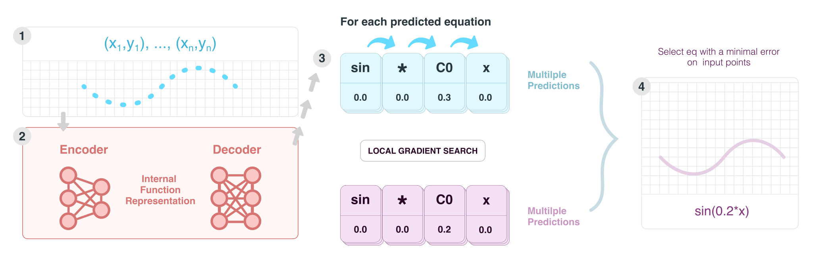

Predictions on unseen data
In this section we present qualitative results generated on the testing dataset.


Many real-world problems can be naturally described by mathematical formulas. Recently, neural networks have been applied to the task of finding formulas from observed data. We propose a novel transformer-based method called SymFormer which we train on a large number of formulas (hundreds of millions). After training our method is considerably faster than state-of-the-art evolutionary methods. The main novelty of our approach is that SymFormer predicts the formula by outputting the individual symbols and the corresponding constants simultaneously.  This leads to better performance in terms of fitting the available data than alternative transformer-based models. In addition, the constants provided by SymFormer serve as a good starting point for subsequent tuning via gradient descent to further improve the performance. We show on a set of benchmarks that SymFormer outperforms two state-of-the-art methods while having faster inference.
In this section we present qualitative results generated on the testing dataset.
We have evaluated SymFormer on common benchmarks (see the paper) and compared it to current state-of-the-art approaches: NSRS [1] and DSO [2].
| SymFormer | NSRS [1] | DSO [2] | ||||
| benchmark | R2 | time (s) | R2 | time (s) | R2 | time (s) |
|---|---|---|---|---|---|---|
| Nguyen | 0.99998 | 47.50 | 0.96744 | 169.46 | 0.99297 | 140.25 |
| R | 0.99986 | 94.33 | 1.00000 | 95.67 | 0.97488 | 855.33 |
| Livermore | 0.99996 | 43.00 | 0.88551 | 193.09 | 0.99651 | 276.32 |
| Koza | 1.00000 | 101.00 | 0.99999 | 111.50 | 1.00000 | 217.50 |
| Keijzer | 0.99904 | 48.67 | 0.97392 | 255.50 | 0.95302 | 3929.50 |
| Constant | 0.99998 | 90.88 | 0.88742 | 230.38 | 1.00000 | 2816.19 |
| Overall avg. | 0.99978 | 52.95 | 0.92901 | 199.63 | 0.99443 | 326.53 |
@article{vastl2022symformer,
title={SymFormer: End-to-end symbolic regression using transformer-based architecture},
author={Vastl, Martin and Kulh{\'a}nek, Jon{\'a}{\v{s}} and Kubal{\'i}k, Ji{\v{r}}{\'i} and Derner, Erik and Babu{\v{s}}ka, Robert},
journal={arXiv preprint arXiv:2205.15764},
year={2022},
}